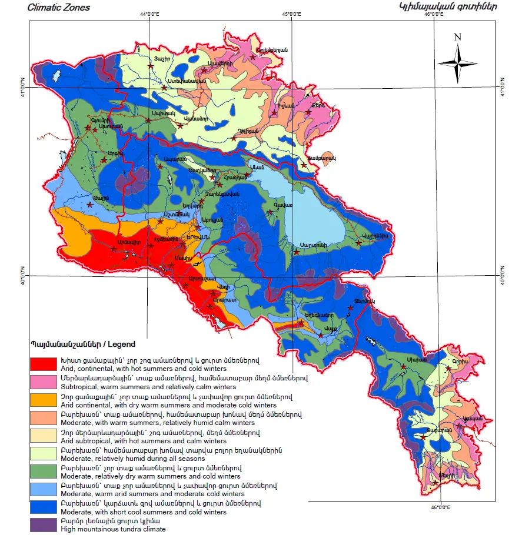
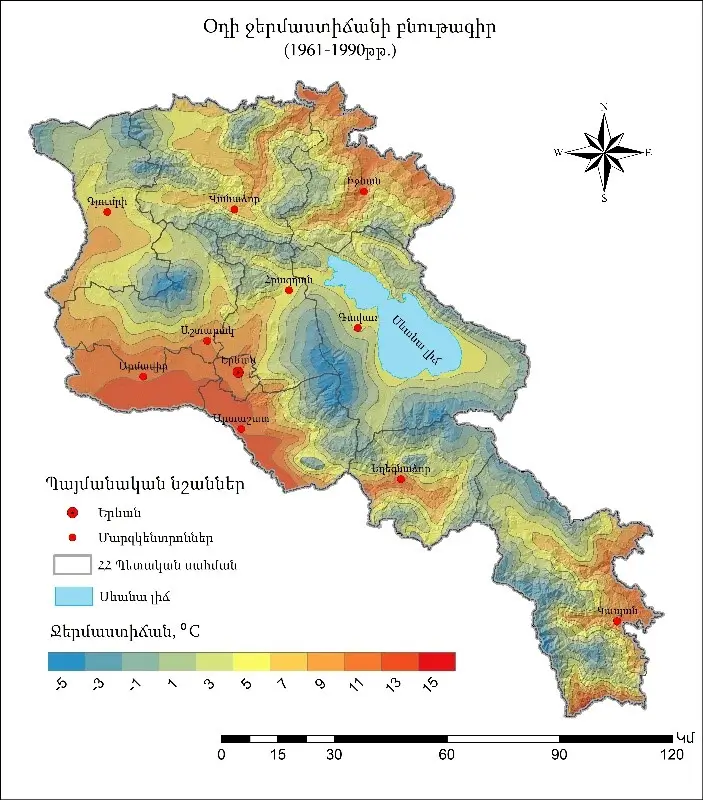
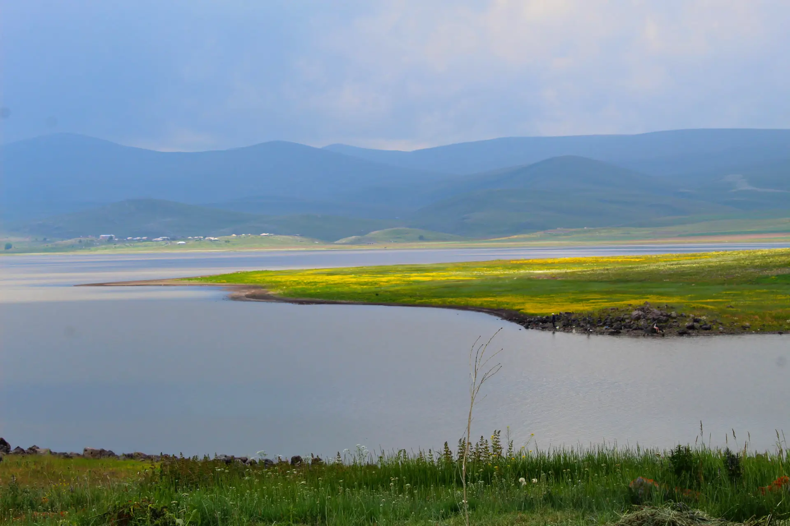
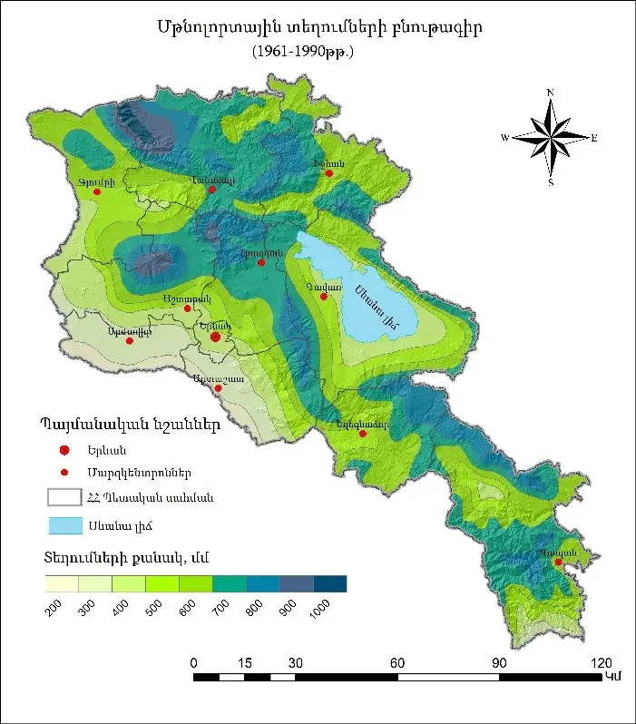
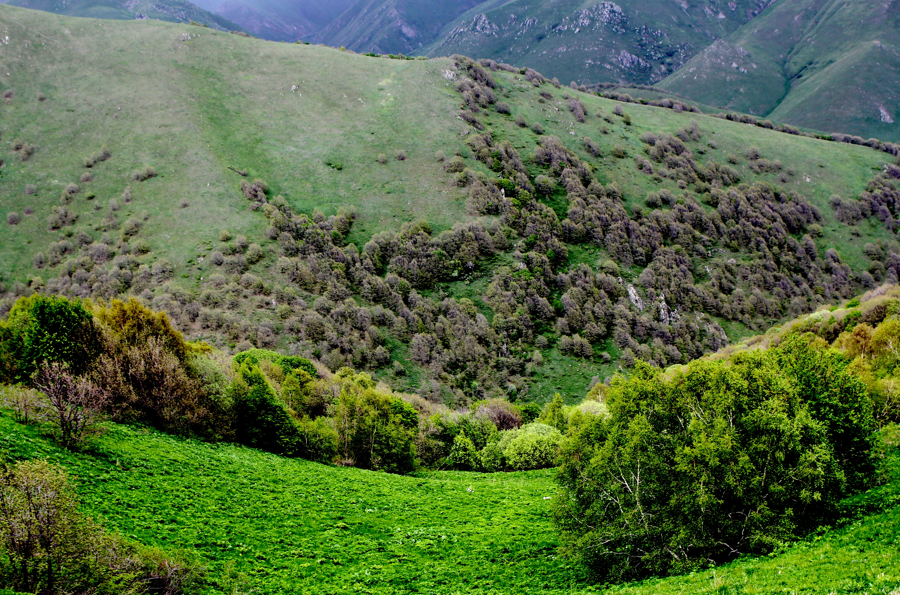
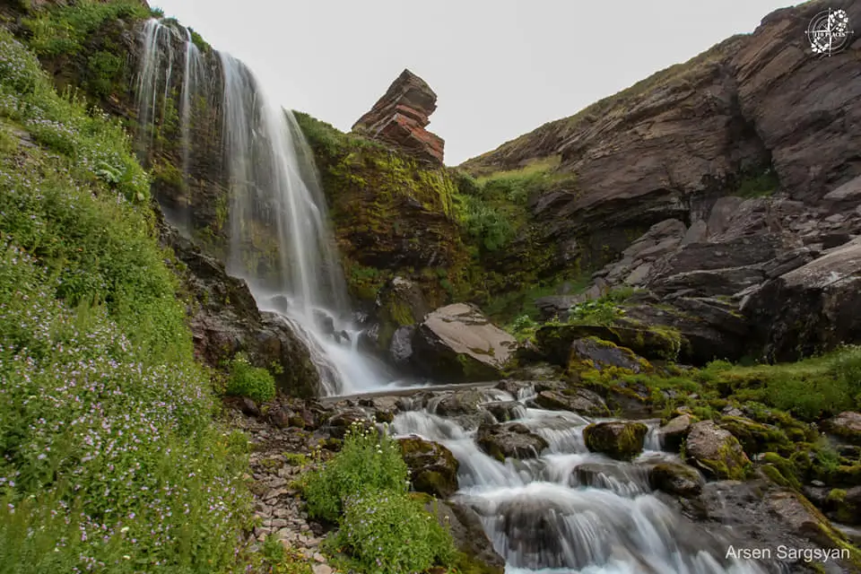

ԲՆՈՒԹԱԳԻՐ
Կլիմա
Հայաստանը, լինելով լեռնային երկիր, ունի բացառիկ կլիմայական բազմազանություն։ Այստեղ հանդիպում են գրեթե բոլոր կլիմայական գոտիները՝ մերձարևադարձայինից մինչև ալպիական։
Կլիմայական գոտիներ՝ ըստ բարձրության
Կլիմայի տեսակը
Բարձրությունը ծովի մակերևույթից
Չոր մերձարևադարձային
Մինչև 900 մ
Չոր ցամաքային
Մինչև 1300 մ
Չափավոր տաք չորային
1200 – 1700 մ
Բարեխառն
Մինչև 2000 մ
Լեռնային ցուրտ
Մինչև 3500 մ
Բարձրլեռնային
Ավելի քան 3500մ


Ջերմաստիճան
Ամառը՝ շոգ ու արևոտ (+30°–+35°C)
Ձմեռը՝ կարճ, բայց ցուրտ (-15°–-20°C)
Տարեկան միջին արևոտ օրերի քանակը՝ մոտ 270
Ամենաշոգ շրջանը՝ Արարատյան դաշտ, երբեմն մինչև +42°C


Տեղումներ
Տարեկան տեղումների միջին քանակը՝ ~ 640 մմ
Անհավասարաչափ տեղումներ ՝ 250–850 մմ՝ կախված տարածքից
Առավել խոնավ վայրը՝ Հանքավանի սարեր (մինչև 850 մմ)
Ամենաչորը՝ Մեղրու գետահովիտ (~250 մմ)
Որոշ վայրերում ձյուն գրեթե չի լինում


Քամիներ
- Երևանում՝ լեռնահովտային քամիներ՝ կեսօրից հետո
- «Մանթաշի քամի»՝ Արագածի շրջաններից
- Մրրիկներ՝ մինչև 40 մ/վրկ ուժգնությամբ ՝ լեռնանցքներում
- Լեռնային քամիներ՝ Գյումրիում, Եղնախաղում, Շիրակի լեռներում
Կլիմայական առանձնահատկություններ
- 1–2 ժամում հնարավոր է կլիմայի կտրուկ փոփոխություն
- Հյուսիս-արևմտք–հարավ-արևելք ձգվող լեռները պաշտպանում են հյուսիսային քամիներից
- Սև և Կասպից ծովերից եկող խոնավությունը սահմանափակ է՝ պայմանավորելով չոր կլիմա
- Արարատյան դաշտը ավելի շատ ենթարկվում է Իրանական բարձրավանդակի ազդեցությանը:

Տեղումներ և ոռոգում
Ցածրադիր շրջաններում տեղումները քիչ են, ուստի գյուղատնտեսության համար կիրառվում է արհեստական ոռոգում։ Հայաստանը դեռ հնագույն ժամանակներից ունեցել է ջրանցքների զարգացած համակարգ։